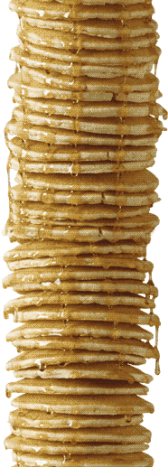

O problema das panquecas
Para começar, imagine uma pilha de panquecas,
de diferentes tamanhos, empilhadas numa mesa
e prestes a cair, pois está desordenada,
você tem uma espátula na mão e então resolve
utiliza-la para impedir a queda da pilha.
Para solucionar o problema leve em consideração as
observações a seguir
-
Você só pode posicionar a espátula em baixo de uma ou mais panquecas
-
O único movimento permitido com a espátula é inverter a pilha que está a cima dela
-
As panquecas Devem ser ordenadas da maior para a menor de baixo para cima
O problema das panquecas queimadas
Aqui as coisas já começam a complicar, caso não estivesse complicado ainda, pois as panquecas
, desta vez, possuem uma propriedade a mais e é um lado queimado. Como assim? Um dos lados
das panquecas não pode ser vista, você servirá as panquecas a um cliente exigente, ou seja,
no fim o lado queimado não deve ser visto.
Quais as novas observações?
- Ao inverter a pilha com sua espátula o lado queimado acabará na direção contrária a anterior
-
No final, além de ordenadas, as panquecas devem se encontrar com as partes queimadas viradas
para baixo.